City guides
Long, personal guides with hidden gems, background stories, day plans and honest tips – free. 🌍 DE · EN · ES · 📍 save to Google Maps · 🆓 lots of free activities · 🎟️ 5% off with my code. 🎯 Travel quiz: challenge your friends →
- 🇳🇱🇳🇱 Amsterdam
 🇧🇪 Antwerp
🇧🇪 Antwerp- 🇳🇱🇳🇱 Arnhem
- 🇦🇹🇦🇹 Bad Gastein & Lungau
 🇪🇸 Barcelona
🇪🇸 Barcelona 🇩🇪 Berlin
🇩🇪 Berlin- 🇸🇮🇸🇮 Bled
 🇸🇰 Bratislava
🇸🇰 Bratislava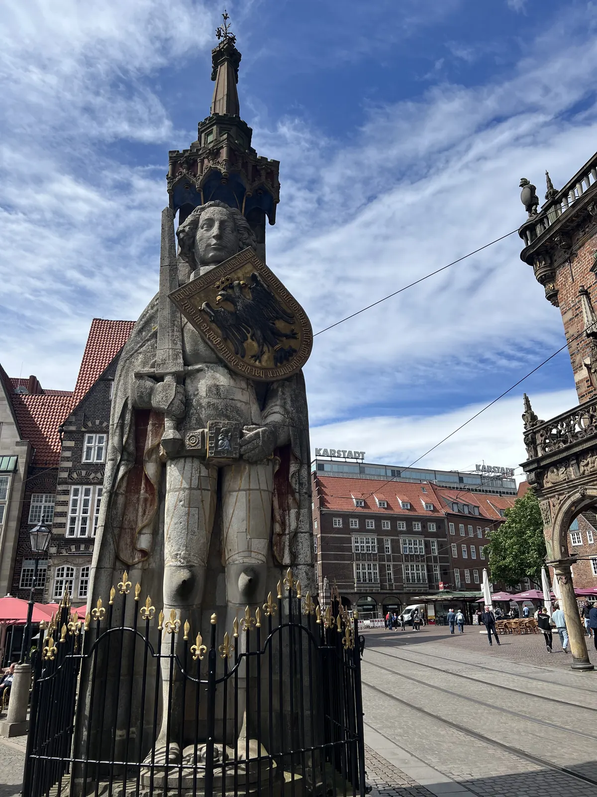
🇩🇪 Bremen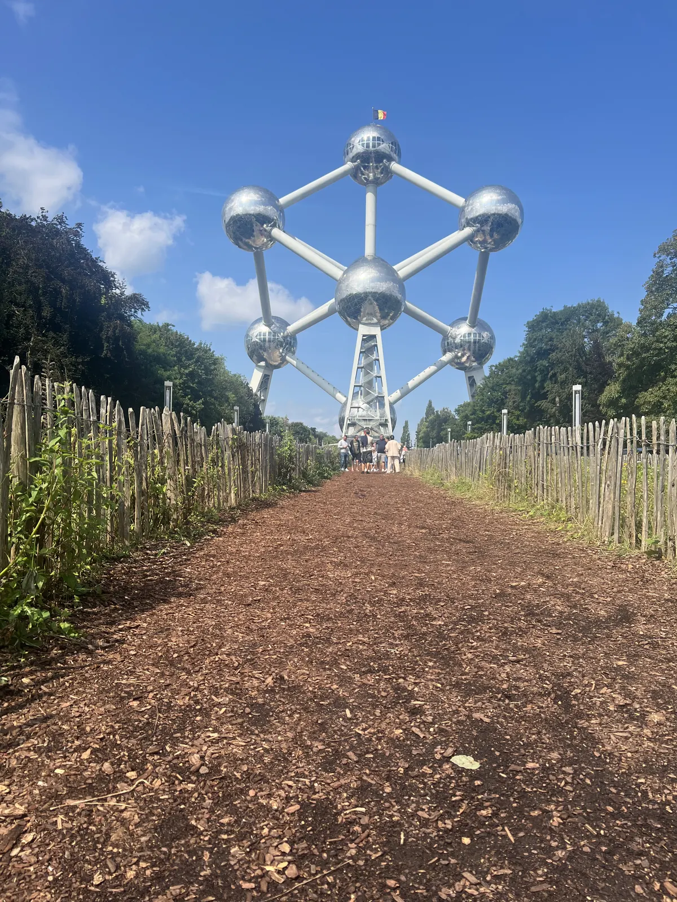
🇧🇪 Brussels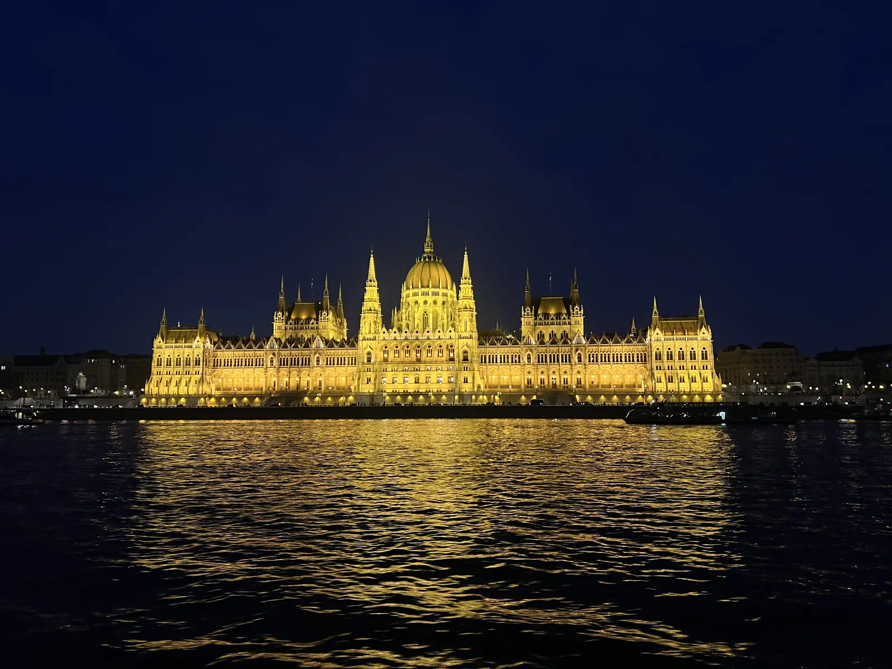
🇭🇺 Budapest 🇳🇱 The Hague & Scheveningen
🇳🇱 The Hague & Scheveningen 🇩🇪 Düsseldorf
🇩🇪 Düsseldorf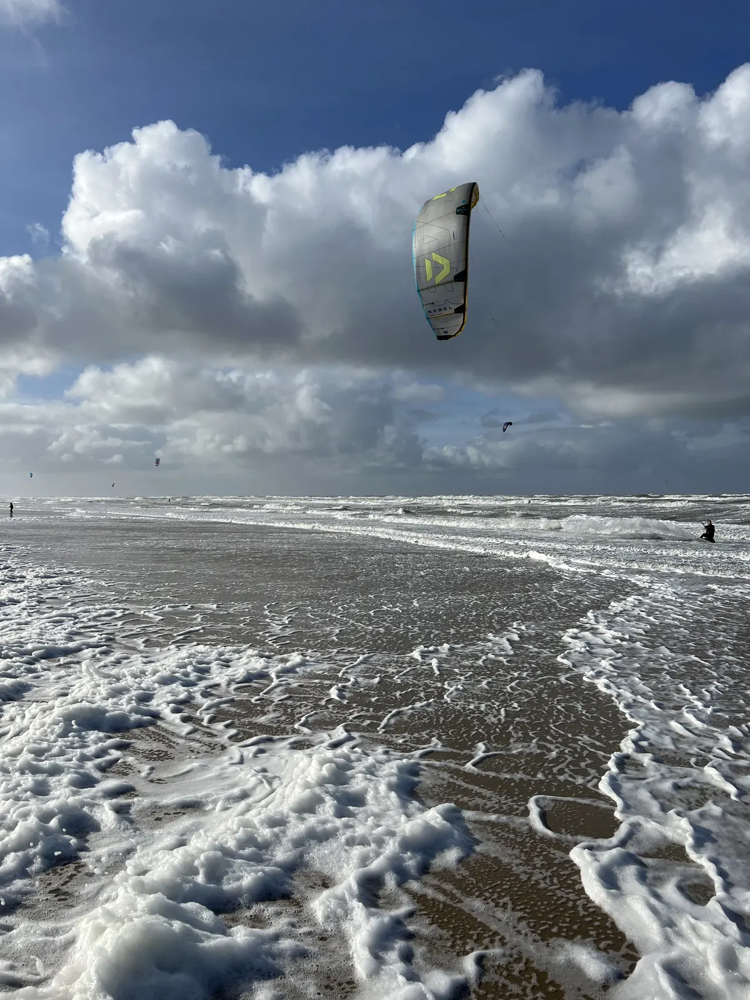
🇳🇱 Egmond aan Zee- 🇩🇪🇩🇪 Freiburg
- 🇩🇪🇩🇪 Gelsenkirchen & the Ruhr
 🇧🇪 Ghent
🇧🇪 Ghent- 🇪🇸🇪🇸 Gran Canaria
 🇩🇪 Hamburg
🇩🇪 Hamburg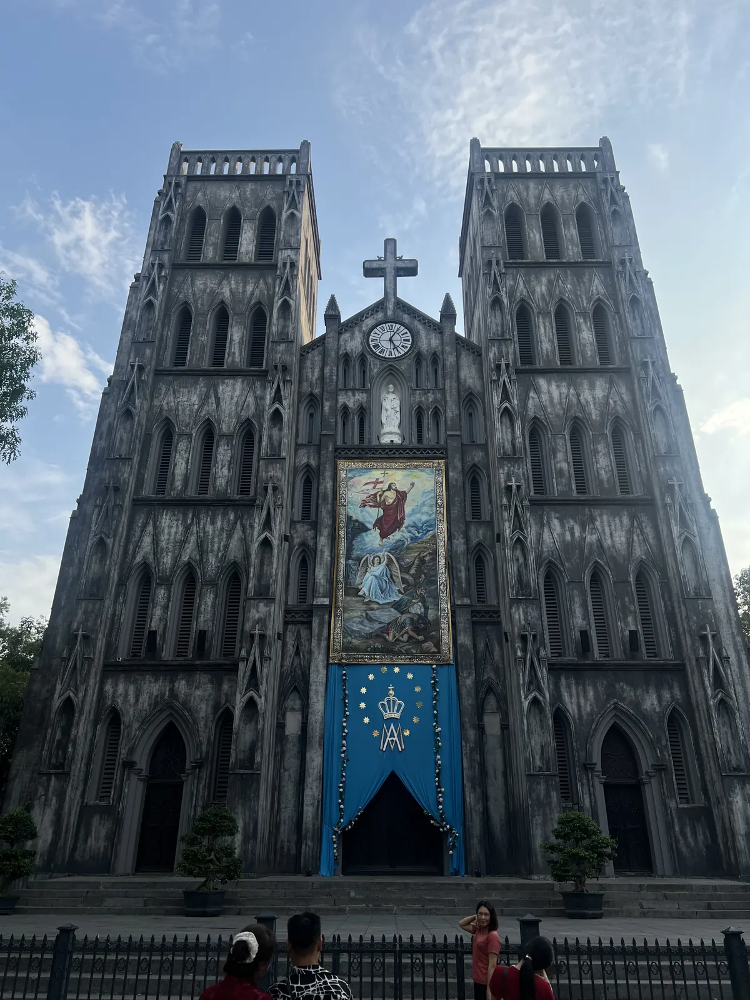
🇻🇳 Hanoi 🇻🇳 Hoi An
🇻🇳 Hoi An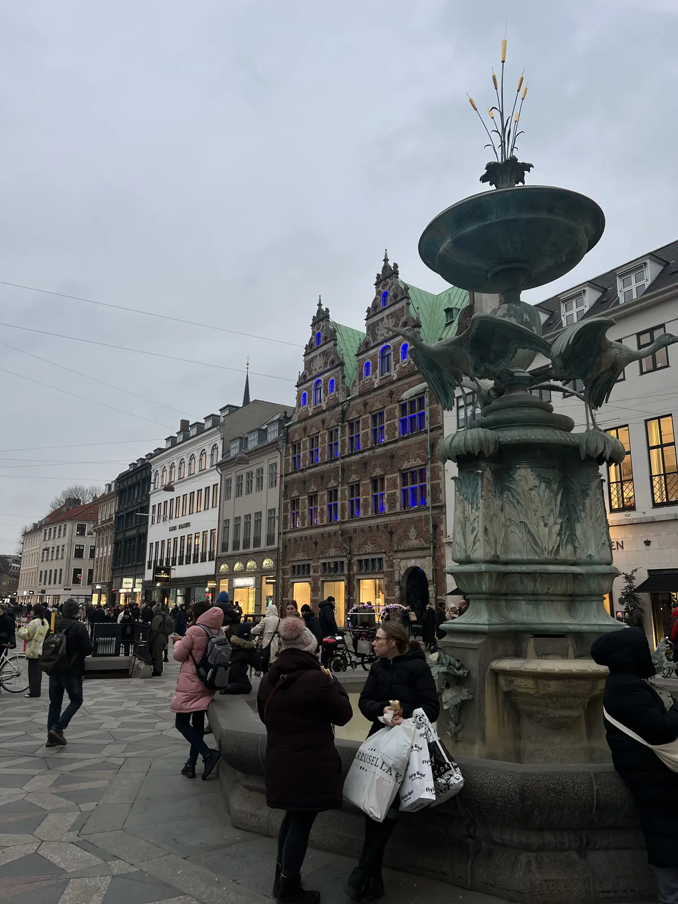
🇩🇰 Copenhagen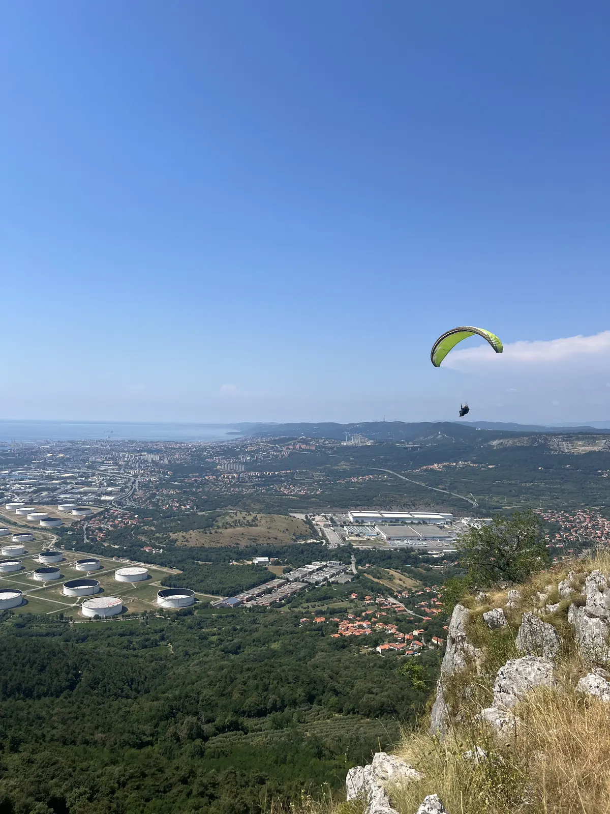
🇸🇮 Koper 🇹🇭 Krabi & Ao Nang
🇹🇭 Krabi & Ao Nang 🇯🇵 Kyoto
🇯🇵 Kyoto 🇸🇮 Ljubljana
🇸🇮 Ljubljana- 🇩🇪🇩🇪 Lübeck
 🇱🇺 Luxembourg City
🇱🇺 Luxembourg City 🇪🇸 Mallorca
🇪🇸 Mallorca 🇲🇦 Marrakech
🇲🇦 Marrakech- 🇺🇸🇺🇸 New York
 🇳🇱 Nijmegen
🇳🇱 Nijmegen 🇯🇵 Osaka
🇯🇵 Osaka 🇹🇭 Phuket
🇹🇭 Phuket 🇨🇿 Prague
🇨🇿 Prague 🇭🇷 Pula
🇭🇷 Pula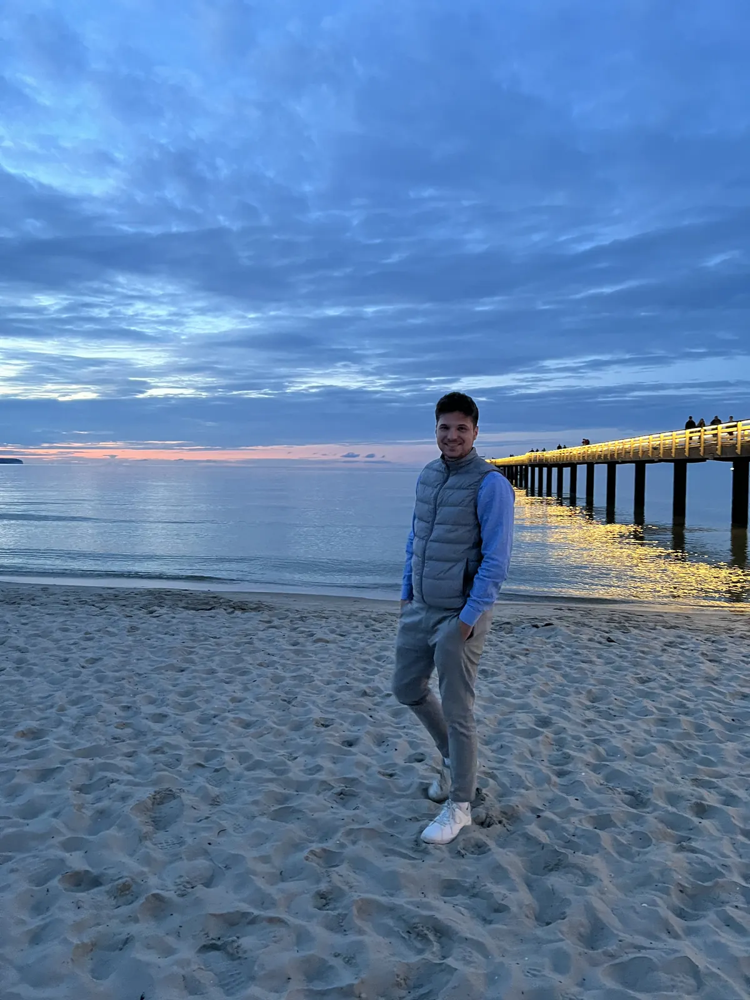
🇩🇪 Rügen- 🇻🇳🇻🇳 Saigon (Ho Chi Minh City)
 🇩🇪 Black Forest
🇩🇪 Black Forest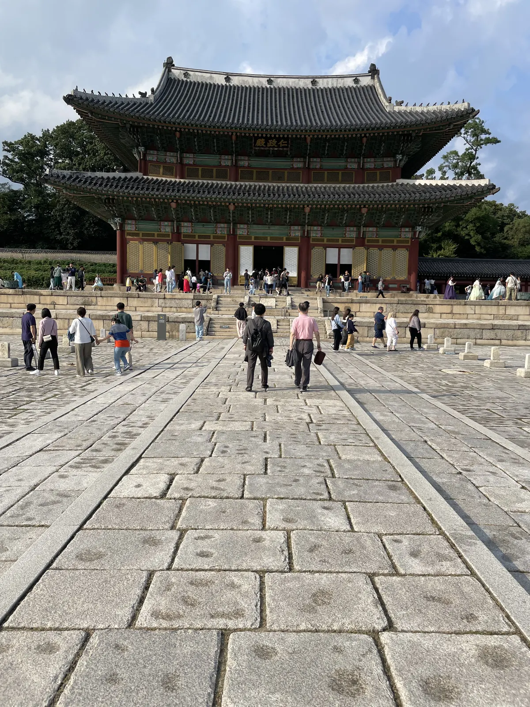
🇰🇷 Seoul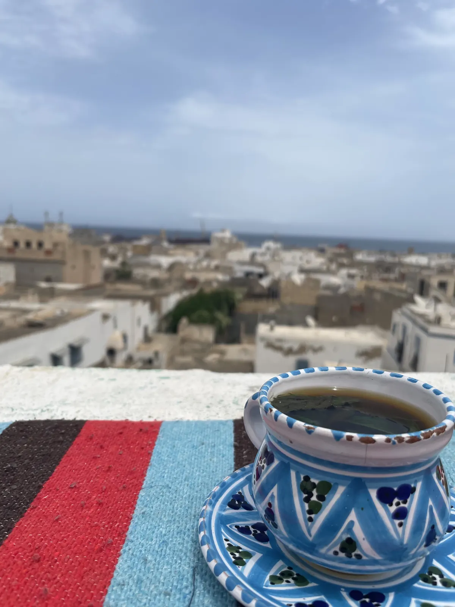
🇹🇳 Sousse- 🇫🇷🇫🇷 Strasbourg
 🇦🇱 Tirana
🇦🇱 Tirana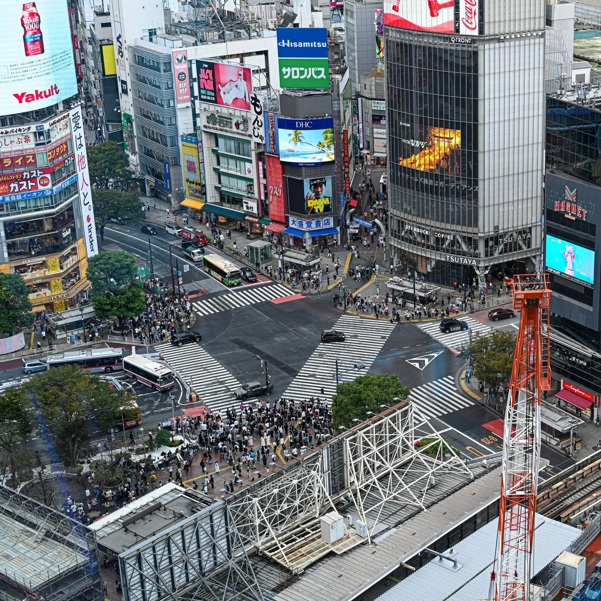
🇯🇵 Tokyo- 🇳🇱🇳🇱 Venlo
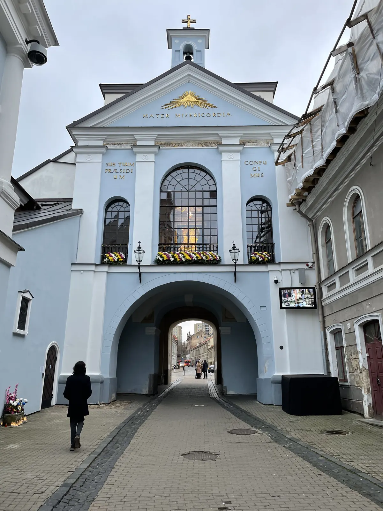
🇱🇹 Vilnius 🇦🇹 Vienna
🇦🇹 Vienna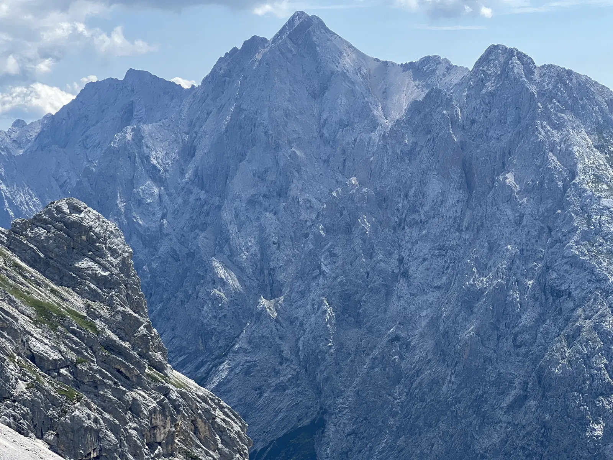
🇩🇪 Zugspitze & Garmisch